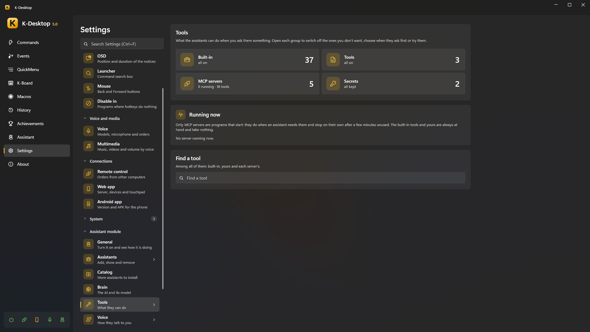
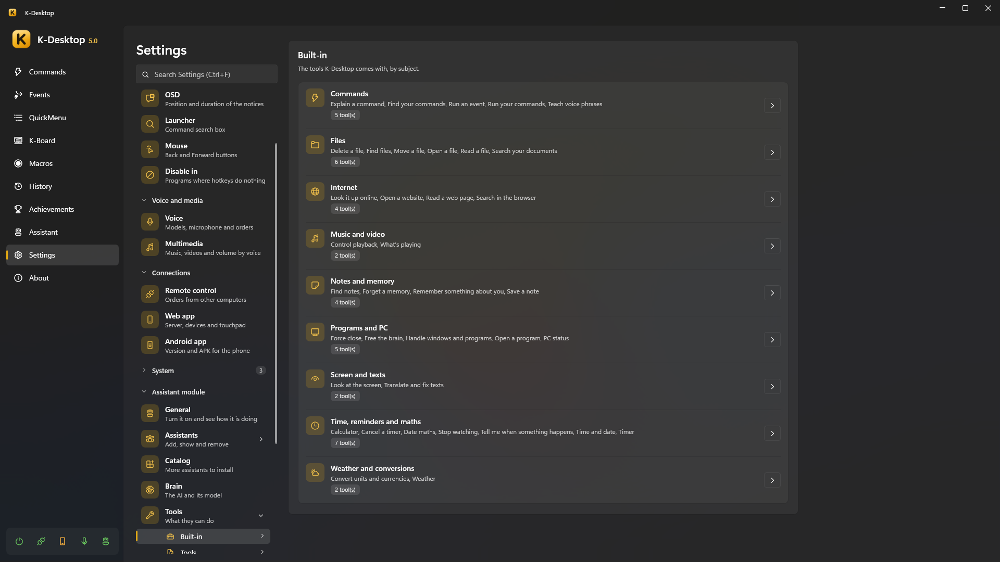
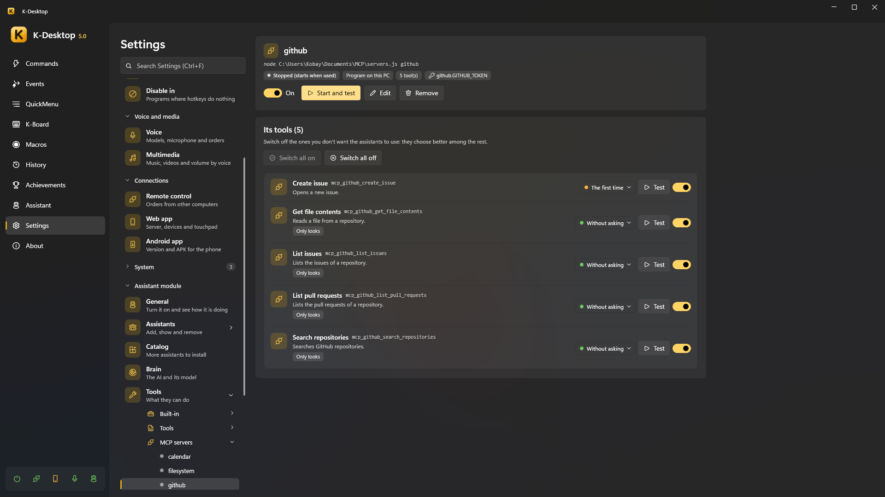

Tools
Tools are what the assistants can do when you ask them something: set a timer, find a file, read a web page, close a program… For each order only the few tools that fit reach the AI, so it chooses well even with hundreds of them.
Settings → Assistant → Tools shows all of them —built-in, yours and each MCP server's— with a search box. Open each group to switch off the ones you don't want, choose when it asks before doing it (Without asking, The first time, Always) or Test it with a small form.

Everything an assistant does shows in Panel → Assistant → Activity (its own, or everyone's with Everyone): what, how (rule, command, AI, memory…) and whether it worked. What can be undone has an Undo button (or say «undo that»).
Built-in tools

| Subject | Tools | For example |
|---|---|---|
| Commands | Run your commands · Find your commands · Explain a command · Check a command or event · Look at the log · See your statistics · Teach voice phrases · Run an event · Create an event · Stop a countdown | «turn on game mode», «when I open Steam turn on game mode», «what does the backup command do?», «why didn't the eight o'clock event run?», «what failed yesterday?», «which command do I use the most?», «when I say telly run my TV command», «don't shut down the computer after all» |
| Time, reminders and maths | Time and date · Timer · Cancel a timer · Program an order · See what is pending · Remove something programmed · Tell me when something happens · Stop watching · Date maths · Calculator | «remind me in half an hour», «at seven empty the recycle bin», «tell me when the download finishes», «how many days until christmas» |
| Notes and memory | Save a note · Find notes · Change a note · Delete a note · Remember something about you · Forget a memory | «note that I have to buy milk», «remember that my boss is called Luis» |
| Files | Find files · Open a file · Read a file · Turn an audio into text · Delete a file · Move a file · Write a document · Copy a file · Create a folder · Compress into a ZIP · Extract a ZIP · Search your documents | «find the electricity bill pdf», «open the last thing I downloaded» |
| Internet | Open a website · Search in the browser · Look it up online · Read a web page · Check the network · Send to the phone | «how much is an RTX 5080», «summarise this page», «is there internet?», «is the NAS answering?», «send this address to my phone» |
| Screen and texts | Look at the screen · Translate and fix texts · Read what is copied · Search what was copied before · Copy a text | «what is this error», «translate what I copied into French», «what have I copied?», «find the link I copied this morning», «copy the plumber's number for me» |
| Programs and PC | Open a program · Handle windows and programs · See the open windows · Arrange several windows · Force close · PC status · Free the brain · Change the volume · Change the audio device · Screen · Light or dark mode · Wi-Fi and Bluetooth · Lock the PC · Shut down or restart · Take a screenshot · Power plan · Keep awake | «minimize Steam», «put the browser and VS Code side by side», «set the volume to 30», «turn on dark mode», «lock the PC», «Chrome is not responding, force it closed», «why is the computer slow» |
| Music and video | What's playing · Control playback | «what song is this», «pause the video» |
| Weather and conversions | Weather · Convert units and currencies | «will it rain tomorrow», «how much is 50 dollars in euros» |
Some details:
- Tell me when something happens watches for a program closing or a window appearing, the processor or the graphics card calming down, a download finishing or a folder that stops changing. The assistant that set it says it when it happens, and, if you ask («tell me on my phone…»), it reaches your phone too.
- Send to the phone sends a text, a link or a small file to your paired devices (all, or the one you name). It asks the first time, as Ask before doing something says.
- The calendar, the mail and Telegram have their own tools (checking and changing the agenda, reading and sending mail, writing and reading Telegram): see Calendar, Mail and Telegram.
- Create an event: «when I open Steam turn on game mode», «if I leave the PC alone for 10 minutes, lock it», «every time I connect the headphones tell me their battery», «when a pdf arrives in Downloads, let me know». It makes an event of any kind (a time, a program that opens or comes to the front, the PC left alone, locked or waking up, a file in a folder, a USB stick, headphones, a controller or a screen, the network, the battery or the processor above or below a %, sunrise or sunset, when K-Desktop starts…) and saves it at once: it runs your commands (also when it ends, like when you close the program) or asks the assistant something, with an «Only if» of hours, days or an open program if you say so. It asks like the riskiest thing it will do (your commands, once), says what it made, shows in Events marked with the assistant that made it, and «undo» removes it.
- Program an order: «at 19:00 check the weather, send it to me on Telegram and shut down the computer», «tomorrow at 9…», «every day at 8…». It is kept as an event that, at its time, gives the order to the assistant as if you said it then. What it will need is approved when you ask (it asks once, for the riskiest part, as Ask before doing something says); at that time it asks nothing: it does what was approved and what needs no permission, and nothing else. Shutting down or restarting always goes last, and at the end it says what worked and what didn't. If the PC was off or asleep at that time, it is not done late: it is removed and you are told. «No need for the seven o'clock thing» removes one. «What do you have pending?» answers everything at once: timers, programmed orders and what it is watching for you («tell me when…»). A plain reminder for another day («remind me tomorrow at 7…») is a timer.
- Look at the screen reads text with Windows' text recognition (also «copy the text of this window»); to understand a picture it needs a model with vision.
- Translate and fix texts works on what you have selected or copied (translate, correct, summarise, more formal, a list, shorter…) and pastes it back in the same window or leaves it copied. Your clipboard is put back as it was.
- Read what is copied reads what is in your clipboard: the text; if you copied files, which ones (and it can read them); if it is a picture, it looks at it like Read a file (with a model that sees, or its text by Windows' recognition). Search what was copied before looks at the texts of the clipboard history (never pictures nor files), and with Copy a text it can give you one of them again. It is turned off in Settings → Clipboard → Assistants can read it. Copy a text leaves one ready to paste (undoing it brings back what was there, while K-Desktop stays open: what is copied is never saved to a file). As what is copied may be a password, another program never reads it (nor the history) through «Share the tools» with «Only what looks things up», and with «Everything, asking you first» you are asked.
- Look it up online searches the web and reads the first useful result; Search in the browser only opens the search in your browser.
- Change the volume, Change the audio device, Screen (brightness, project like Win+P, turn the screens off), Light or dark mode, Wi-Fi and Bluetooth, Lock the PC, Shut down or restart (also sleep, hibernate and sign out), Take a screenshot, Power plan and Keep awake do the same actions as your commands, without you having to make one. They ask like those actions and as Ask before doing something says: shutting down, restarting, sleeping or signing out always; turning off the screen, the Wi-Fi or the Bluetooth, the first time; locking, never (nothing is lost). Shutting down and restarting wait 10 seconds you can cancel.
- Arrange several windows places two to six open windows together on one monitor (where the first one is, or the one you say): side by side, one above the other, in a grid, or one big on the left and the rest on the right. An assistant on the desktop carries them one by one, as when it moves one window. See the open windows tells which ones you have, where they are and which are minimized.
- Check the network tells whether there is internet and, when there is not, where it fails (no network, the router, the DNS, a sign-in page like in a hotel); whether a machine or website answers (by its name, its address or «the router», also a port: «server:22»); your local and public IP; and the Wi-Fi you are on, with its signal (Windows only gives the signal if desktop apps may use your location).
- Weather uses Open-Meteo and currencies the European Central Bank's rates (no account needed). Without a city it uses Settings → Assistant → General → Where you are, or Windows' location if you allow it.
- Turn an audio into text («summarize my latest recording», or an audio you drop on it) turns what is said into text
with K-Desktop's voice model (without AI), and the assistant summarizes it or answers about it. Without saying which, it uses
the newest recording in the Record audio folder. It leaves the text in a
.txtnext to the audio; if there was one already (for example, from When it ends, transcribe it), it reads it without transcribing again. - Delete a file sends it to the recycle bin; it and Move a file always ask first (a move can be undone).
- Write a document creates a text file (.txt unless you say another kind; also .md, .csv, .json, .html…; never .bat, .ps1 or programs) on the desktop or where you say. If there is one of that name it is not touched: they ask whether to replace it, and replacing always asks on the PC. Copy a file, Create a folder, Compress into a ZIP and Extract a ZIP never write over anything (the copy or the zip is called «name (2)», and a zip is always extracted into a new folder). Everything can be undone: what was made goes to the recycle bin and a replaced document gets back what it had.
- Check a command or event tells why it does not work or did not run, without running anything: whether it is turned off, whether the program or folder it opens is missing, whether it calls a command that no longer exists, whether its «Only if» is met now, its last runs and the times it did not run (K-Desktop notes the reason: an «Only if» not met, paused, a time missed with the PC asleep…). Look at the log answers «what failed yesterday?» or «did the eight o'clock event run?», and See your statistics, «which command do I use the most?».
Your own tools (JSON)
A JSON tool gives the assistants something new to do without compiling anything: switch on a Home Assistant light, send you a Telegram message, run one of your commands with phrases of its own, chain several steps or launch a script.
- They are in
%APPDATA%\K-Desktop 5\Assistant\Tools\, one.jsonper tool (Tools → Custom → Open folder, or New from a template). They reload a moment after you save, add or remove one. - Schema:
tool.schema.json. With"$schema"pointing to it your editor shows the mistakes as you type. A file with errors is not loaded and K-Desktop tells you why. - Examples of every type.
{
"name": "living_room_light", // lower case, numbers and _ (mcp_ is reserved)
"type": "http", // http · kdesktop · routine · script
"description": "Turns the living room light on or off.", // for the model
"examples": ["turn on the living room light", "living room off"],
"parameters": {
"state": { "type": "string", "enum": ["on", "off"], "description": "on or off" }
},
"intent": "turn the living room light {{state}}", // what you see in the activity and when it asks
"say": { "ok": "Living room light: {{state}}.", "error": "The hub is not answering." },
"risk": "safe", // safe · askOnce · askAlways
"readsOnly": false,
"gesture": "waitForWindow", // optional: waitForWindow · tray · clock · typing
"timeout": 15,
"request": {
"method": "POST",
"url": "http://homeassistant.local:8123/api/services/light/turn_{{state}}",
"headers": { "Authorization": "Bearer {{secret:ha_token}}" },
"body": { "entity_id": "light.living_room" }
}
}
descriptionis for the model: what it does and when to use it. Models follow English best, but any language works.examples: phrases that ask for it. They decide which tools reach the model for each order. If you say exactly one of them and the tool needs nothing from the model, it is done at once without the AI («good night» → a routine).parameters: what the model has to give it (string,number,integer,boolean, withenum,default,minimum,maximum). Those withoutdefaultare required unlessrequiredsays otherwise. A wrong value is explained to the model, which can fix it.say: what the assistant says when it is done. Without it, the model says it in its own words.readsOnly: it only looks something up (a temperature, a state); the model answers with what it returns.risk:safenever asks;askOnceasks until you say «Yes, and don't ask again»;askAlwaysalways asks.gesture(optional): what the character does meanwhile —wait for the window it opens, go to the tray, leave a mark by the clock, type in the window in front—. Only decoration: the tool does not wait for it.
Placeholders
| Placeholder | What it is | Where |
|---|---|---|
{{parameter}} |
The value the model gave | Everywhere |
{{secret:name}} |
A secret (see below) | URL, headers, body, a script's arguments and environment |
{{result}} |
The answer (or the part chosen with pick) |
say |
{{result.field}} |
A field of the JSON answer (attributes.temperature, items.0.name) |
say |
{{status}} |
HTTP status or the script's exit code | say |
In a JSON body, a text that is only "{{parameter}}" keeps its type: a number stays a number.
Types
| Type | What it does |
|---|---|
http |
Any web API: request with method (GET by default), url, headers, query, body (or bodyText with contentType) and pick (the part of the answer given to the model). An error status (4xx, 5xx) is a failure |
kdesktop |
One of your commands with phrases of its own: "command": "Cinema mode", by its exact name (never a similar one). Risky commands ask as always |
routine |
Several steps: another tool (built-in or JSON, never another routine) with its arguments, one of your commands ("command"), or a wait ("wait": 1, up to 30 s). A failing step stops the routine unless it has continueOnError |
script |
One of your scripts: "script": { "file": "check.ps1", "args": ["{{host}}"], "env": { "API_KEY": "{{secret:my_key}}" } }. .ps1 (Windows PowerShell), .bat/.cmd, .py (with uv run --script if you have uv, otherwise py or python), .js (Node.js) or .exe. They run as your normal user (never as administrator), without a window, 30 s at most; what they print is the answer and an exit code other than 0 is a failure |
Important
A script always asks before its first run, even with Ask before doing something set to Never. With «Yes, and
don't ask again» it is approved; if the script or its .json changes, it asks again. A script that turns up in the folder
without you knowing never runs unseen.
Secrets
Passwords, tokens and keys your tools and servers use: Tools → Secrets, or in
%APPDATA%\K-Desktop 5\Assistant\secrets.json. Written in plain text there, each value is encrypted with your Windows
user the first time it is read. The model never sees a secret: it is only put in when the request is sent, and hidden
as ••• if an answer contains it. A backup restored on another PC cannot read them: write them again.
MCP servers
An MCP server is a program (or an address) that gives several tools at once: the same ones Claude Desktop, VS Code or Open WebUI with mcpo use. Tools → MCP servers:

- Import… reads another program's file (mcpo's
config.json, Claude Desktop's) and lets you choose. Paste takes the JSON block you copied from a server's instructions. Variables that look secret (*_TOKEN,*_KEY,*_SECRET,*PASSWORD*,CHAT_ID…) become encrypted secrets. Servers for things the assistants already do (files, screen, clipboard, memory, time, the web) come unticked, with the reason. - Add server: a program (
node,npx,uvx, an.exe…, its arguments and folder) or an HTTP address; its variables or headers, each normal or secret; the longest wait per call and after how long unused it stops. - Each server has its own page with its state, Start and test, and its tools to switch on or off (the assistants choose better among fewer).
They are started by the assistant process, as your normal user, only when one of their tools is needed, and stop on
their own after some minutes unused; Tools → Running now shows which are running. Their tools are remembered, so
choosing among them never starts a server. By default they ask the first time, except those the server says only read.
What a server writes to stderr goes to Logs\mcp-<server>.log.
From a command
With the Assistant: use a tool action, a command uses any of these tools without the
AI: with a shortcut, from a QuickMenu or in an event (for example, pausing downloads when a game opens). What it gives
back goes to {result} for the next actions. As the command is yours, it does not ask first, except for a script that is
new or changed or a tool you set to Always; if the command runs by itself, those are not done. It needs the Assistant
module on.
Sharing with other programs
The other way round: Tools → Share turns the assistants into an MCP server for Claude Desktop, VS Code, Open WebUI or any
program with MCP. Switch on Share the tools and Copy the configuration, then paste it into the program's MCP
settings (claude_desktop_config.json, VS Code's mcp.json, mcpo's config.json):
{
"mcpServers": {
"k-desktop": {
"command": "C:\\…\\KDesktop.exe",
"args": ["--mcp"],
"env": { "KDESKTOP_MCP_KEY": "…" }
}
}
}
- What they can use: Only what looks things up (the time, sums, the weather, finding files or searching the internet, reading the screen… nothing that changes anything), Everything, asking you first: what changes something asks on this PC with the usual window, even if you set the assistants not to ask, or Everything, without asking: only what you set to Always asks (and a new script, the first time).
- With Ask for the key (the default) only the programs with the key get in; Change the key leaves out those that had the old one. Off, any program of yours on this PC gets in (never from another PC or user) and the copied configuration carries no key.
- K-Desktop must be open with the assistant module on. Each call shows in the activity with the program's name, and the page shows who is connected. Tools you switched off, and those of your own MCP servers, are not shared.